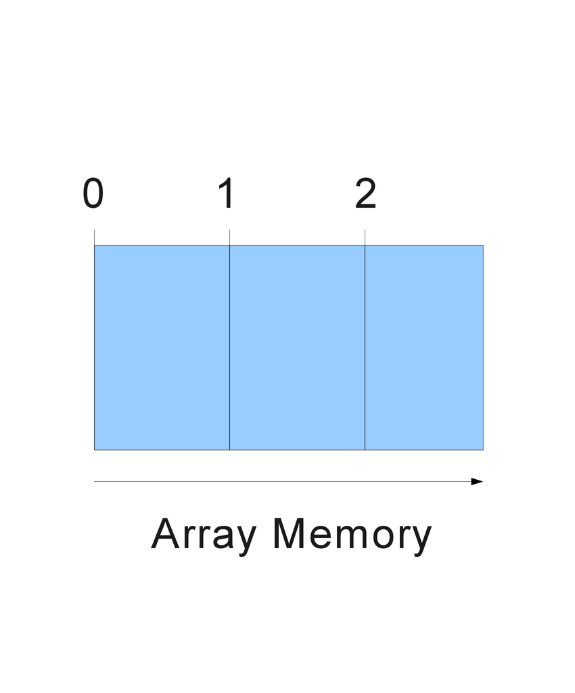

Tema 5Arreglos
Hemos aprendido cómo utilizar variables para almacenar diferentes tipos de datos. Puede haber casos en los que necesitamos utilizar múltiples variables, lo cual implicaría tener que asignar un nombre a cada una. Esto claramente no es muy conveniente cuando necesitamos 100 o 200 variables, por lo que existe una forma de guardar muchos datos con un mismo nombre. A este tipo de variables se denomina arreglo ("array" en inglés), los cuales son muy útiles y están presentes en todos los lenguajes de programación. En otros lenguajes, los arreglos como listas de un tipo de dato en específico, pero en JavaScript podemos asignar cualquier tipo de dato a un elemento de un arreglo.
Los arreglos cuentan con varias funciones que nos ayudan a modificarlos u obtener información sobre ellos y sus elementos, como saber su longitud, agregar o borrar elementos, y ordenar los elementos, entre muchas otras.
Para declarar un arreglo también utilizamos la palabra reservada var con una pequeña variación: para el valor inicial encerramos entre corchetes [ ] una lista separada por comas con todos los valores iniciales que queramos en nuestro arreglo.
// Arreglo con 3 valores var miArreglo = ["Hola", "Mundo", 7];
También podemos declarar arreglos vacíos:
// Arreglo vacío: podemos insertar valores después var miArreglo = [];
Perfecto, hemos creado nuestro arreglo. Ahora, ¿cómo podemos acceder a los elementos dentro de él? Como un arreglo almacena varios valores, tenemos que ser un poco más específicos en la forma en la que accedemos a los valores. Esto se logra a través de algo llamado índices. La estructura de un arreglo se puede visualizar de la siguiente manera:

El índice es un valor entero que representa la posición de un valor en el arreglo. Algo muy importante que debes tener en cuenta, es que las posiciones dentro de un arreglo inician desde cero, es decir, al primer elemento se le asigna un 0 como posición, al segundo un 1 y así sucesivamente. Para acceder un elemento, escribimos el nombre del arreglo junto con el índice del valor que queremos encerrado entre corchetes. Observa este ejemplo para acceder y modificar a los 3 elementos del primer ejemplo anterior:
// Cambiamos el string del primer valor miArreglo[0] = "Hello"; // Agregamos un ! al valor original miArreglo[1] = miArreglo[1] + "!"; // Cambiamos al resultado de una operación miArreglo[2] = 24 / 4;